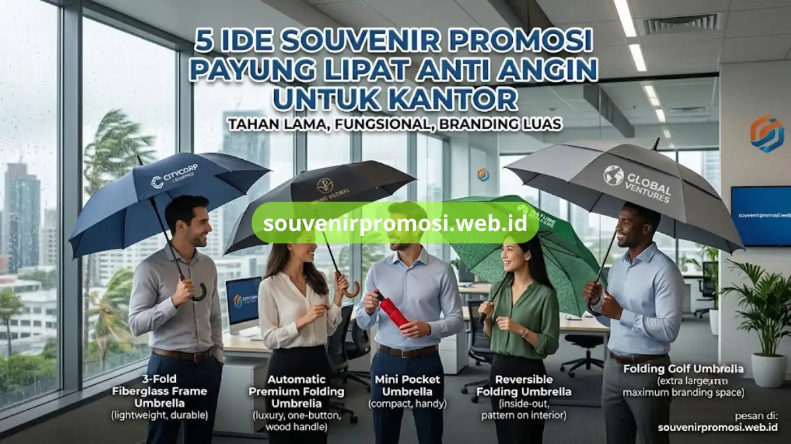

Poin Penting
- Payung lipat anti angin fungsional dan tahan lama untuk merchandise korporat.
- Rangka lentur mencegah payung patah saat tertiup angin kencang.
- Kanopi lebar jadi media branding berjalan dengan visibilitas tinggi.
- Cocok untuk berbagai event dan audiens dari VIP hingga karyawan lapangan.
- Pilihan model bervariasi: 3 rangka fiber, otomatis premium, mini pocket, reversible, dan golf lipat.
Daftar Isi
Pendahuluan
Souvenir promosi payung lipat anti angin adalah pilihan merchandise korporat yang tahan lama, fungsional di iklim tropis, dan memberi visibilitas logo yang luas setiap kali digunakan karyawan atau klien. Payung jenis ini dirancang dengan rangka fleksibel sehingga tidak mudah patah saat tertiup angin kencang. Berikut lima ide model payung lipat anti angin yang paling banyak dipesan sebagai souvenir promosi perusahaan.
Kenapa Payung Lipat Anti Angin Cocok Jadi Souvenir Promosi Perusahaan?
Payung lipat anti angin cocok dijadikan souvenir promosi karena rangkanya dirancang lentur sehingga tahan terhadap tekanan angin yang biasa membuat payung biasa terbalik atau patah. Selain itu, permukaan kanopinya yang lebar menjadikan payung sebagai media branding berjalan yang dilihat berulang kali oleh pemakainya maupun orang di sekitarnya. Untuk perusahaan yang ingin souvenir dengan usia pakai panjang dan paparan logo maksimal, payung lipat anti angin memenuhi kedua kebutuhan tersebut sekaligus.
Souvenir Promosi menyediakan seluruh varian payung lipat anti angin berikut dengan opsi cetak logo satu sisi hingga empat sisi, siap dipesan dalam jumlah grosir melalui souvenirpromosi.web.id.
1. Payung Lipat 3 Rangka Fiber untuk Souvenir Goodie Bag
Payung lipat 3 rangka fiber adalah pilihan souvenir promosi yang ringan namun kuat karena rangkanya terbuat dari fiberglass lentur yang tidak mudah patah saat terkena angin kencang. Model ini paling sering dipilih untuk goodie bag seminar, workshop, atau acara korporat berskala besar karena harganya efisien untuk pemesanan dalam jumlah banyak. Bobotnya yang ringan juga memudahkan peserta acara membawanya tanpa memberatkan tas.
Dari sisi branding, kanopi payung 3 rangka fiber tetap menyediakan ruang cetak logo yang cukup luas di setiap panelnya. Souvenir Promosi menawarkan model ini dengan pilihan warna kanopi yang bisa disesuaikan dengan identitas visual perusahaan.

2. Payung Lipat Otomatis Premium untuk Souvenir Klien VIP
Payung lipat otomatis premium mengusung sistem buka-tutup satu tombol yang memberi kesan eksklusif, sehingga cocok dijadikan souvenir untuk klien VIP atau jajaran manajerial. Fitur otomatis ini menambah nilai praktis sekaligus kesan mewah dibanding payung lipat manual biasa. Banyak perusahaan memilih model ini untuk hadiah relasi bisnis karena kualitas yang dirasakan penerima mencerminkan citra perusahaan yang memberikannya.
Selain fungsinya yang praktis, payung otomatis premium umumnya menggunakan material kanopi yang lebih tebal dan pegangan (handle) berlapis karet atau kayu sehingga terasa lebih solid saat digenggam.
3. Payung Lipat Mini Pocket untuk Souvenir Mobilitas Tinggi
Payung lipat mini pocket dirancang dalam ukuran super ringkas sehingga ideal sebagai souvenir untuk karyawan lapangan atau tim sales dengan mobilitas tinggi. Meski ukurannya ramping, model ini tetap menggunakan rangka anti angin sehingga fungsinya tidak berkurang dibanding payung lipat berukuran standar. Payung ini mudah dimasukkan ke dalam tas kerja, ransel, bahkan sebagian model dapat masuk ke saku jaket.
Untuk kebutuhan branding, area cetak logo pada payung mini pocket memang lebih terbatas dibanding model lain, sehingga Souvenir Promosi biasanya merekomendasikan desain logo minimalis satu warna agar tetap terbaca jelas.
4. Payung Lipat Reversible Anti Basah untuk Souvenir Pengguna Mobil
Payung lipat reversible atau terbalik dirancang agar sisi basah kanopi berada di bagian dalam saat dilipat, sehingga air hujan tidak membasahi jok mobil atau lantai kantor. Model ini menjadi favorit sebagai souvenir untuk eksekutif dan karyawan yang mobilitas hariannya banyak menggunakan kendaraan pribadi. Desainnya yang unik saat terbuka dengan pola dua warna juga membuat payung reversible tampil lebih berbeda dibanding payung lipat konvensional.
Souvenir Promosi menyediakan payung lipat reversible dengan kombinasi warna kanopi luar dan dalam yang dapat disesuaikan agar logo perusahaan tetap terlihat kontras dari kedua sisi.
5. Payung Golf Lipat Tahan Banting untuk Souvenir Area Cetak Logo Besar
Payung golf lipat berukuran ekstra besar menawarkan kanopi terluas di antara kelima model, sehingga memberikan ruang cetak logo paling maksimal untuk kebutuhan brand awareness. Ukurannya yang lega membuat payung ini cocok dijadikan souvenir untuk acara outdoor, pameran, atau hadiah apresiasi akhir tahun yang ingin menonjolkan visibilitas logo secara mencolok. Meski berukuran besar, model ini tetap dapat dilipat sehingga tidak merepotkan saat dibawa.
Rangkanya yang tahan banting membuat payung golf lipat cocok untuk penggunaan jangka panjang, sehingga logo perusahaan akan terus terpapar ke publik selama bertahun-tahun pemakaian.
Pesan Souvenir Promosi Payung Lipat Anti Angin di Souvenir Promosi
Kelima ide souvenir promosi payung lipat anti angin di atas -- mulai dari model 3 rangka fiber, otomatis premium, mini pocket, reversible, hingga golf lipat -- tersedia lengkap di souvenirpromosi.web.id dengan jaminan kualitas cetak logo yang presisi dan tahan lama. Tim Souvenir Promosi siap membantu menentukan model paling sesuai dengan budget, target audiens, dan tujuan branding perusahaan Anda.
Jangan tunggu sampai acara mendadak butuh souvenir. Hubungi Souvenir Promosi sekarang melalui souvenirpromosi.web.id untuk konsultasi gratis dan dapatkan penawaran harga grosir terbaik untuk pemesanan payung lipat anti angin perusahaan Anda.